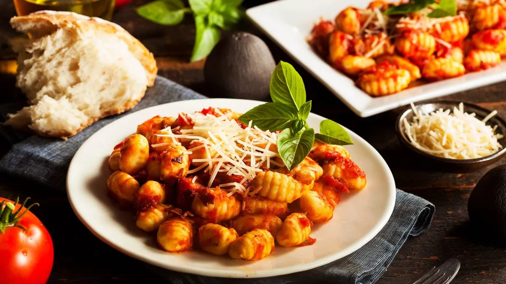

ÑOQUIS CON SALSA FILETTO
Ingredientes
- Papas
- harina
- Tomate perita
- Maicena
- sal
- queso
Preparacion
-
Poner las papas (peladas o lavadas con la piel) en una olla con agua
fria y sal. Hervir y cocinar hasta que estén blandas.
-
Sacarla de la olla, pasarlas por agua fría, dejar entibiar , pelarlas
y cortarlas en cubos..
- Ponerlas en un bol y machacar haciendo un puré sin grumos.
-
Salpimentar, echar la nuez moscada, agregar la harina en forma de
lluvia, los huevos batidos y formar una masa homogénea. Enfriar diez
minutos en heladera.
-
Dar forma a los ñoquis: tomar porciones pequeñas de masa y formar
rollos finos y largos
-
Disponerlos sobre una superficie limpia y enharinada. Cortar los
ñoquis caseros de aproximadamente 2 centímetros y medio de largo,
dejándolos sobre la mesa enharinada para que no se peguen. Luego,
pasarlos por los dientes de un tenedor haciendo una leve presión con
el dedo pulgar. De esta manera, los ñoquis de papa argentinos tomarán
la forma que todos conocemos.
- Servir y disfrutar los deliciosos ñoquis de papa caseros.
Si no se van a consumir en el día, una vez cortados y dada la forma de
los ñoquis caseros con el tenedor, se pueden embolsar y guardar en el
freezer hasta el momento de llevarlos a hervir. En la preparación se les
puede agregar 50 gramos de queso rallado a la masa.
TABLA DE NUTRICION
| ALIMENTO |
POR COMENSAL |
| calorias |
417.26 |
| proteinas |
23.53 |
| potasio |
303.01 |
| amor |
mucho |